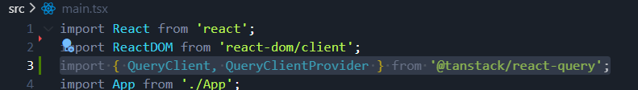
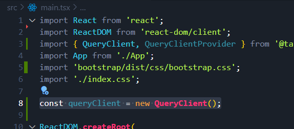
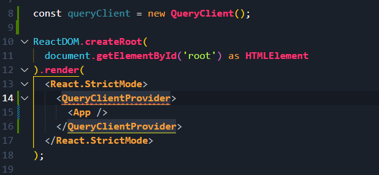
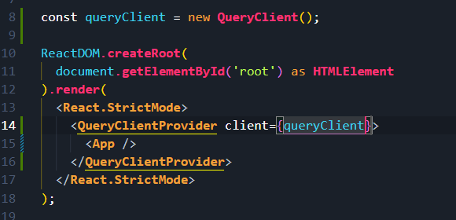

Setting Up React Query
Installation
Run this command to install React Query...
npm i @tanstack/react-query@4.28
Import classes to main.tsx
Open main.tsx, and add these imports...

Query Client is the core object we use for
managing and caching remote data in React Query.
So first, create a new instance of QueryClient...

Then we need to pass this new instance to the using the
QueryClientProvider.
So we wrap the app in a QueryClientProvider...

Then set the client prop to the new queryClient we just created...

Thats all you have to do to set up React Query.
Next we will use it to fetch data.